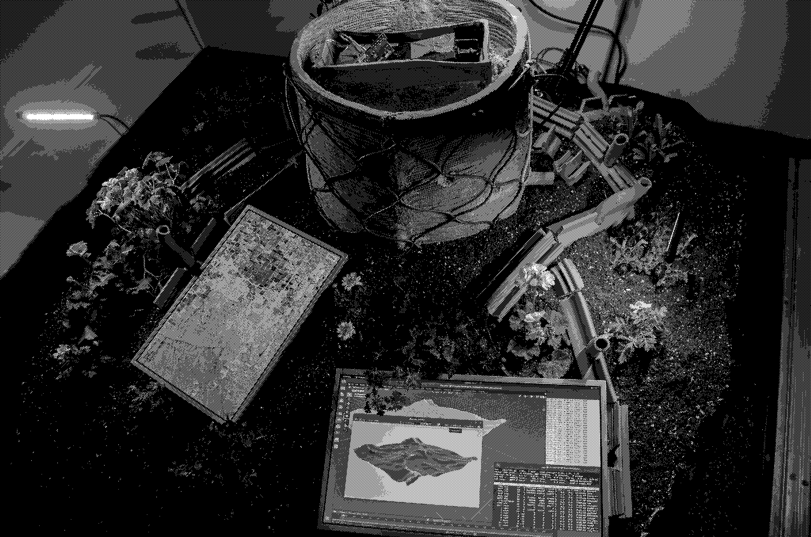
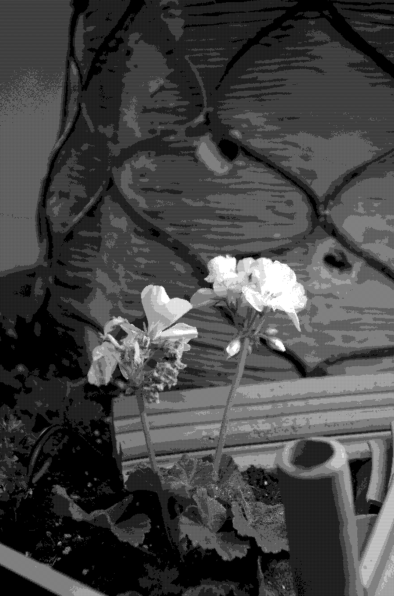
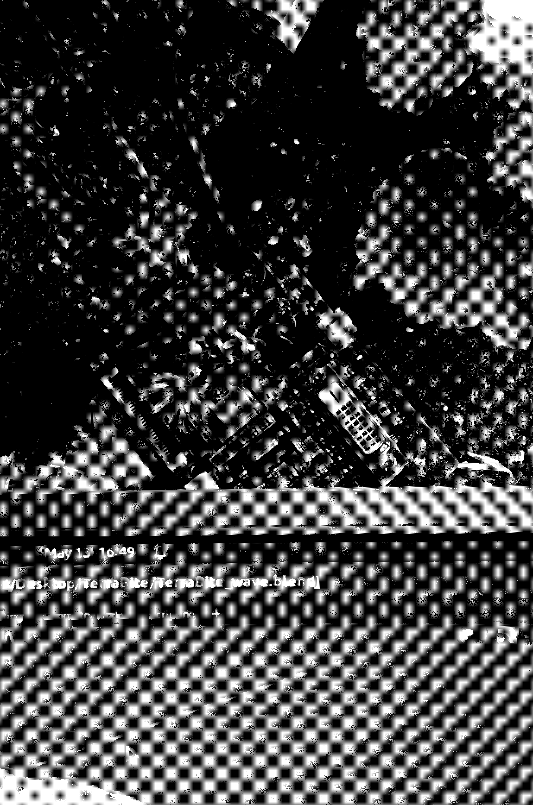

/ TerraByte / public to the public / gardenparty / demolition party / daily paper / up/down the toilet / chairpants / useless umbrella / creek / what-you-see-is-what-you-get / hoses / tree cult / resized living / riget / cubicles digest / flux / andorra / intimacy / still available / studio extension / serpent house




